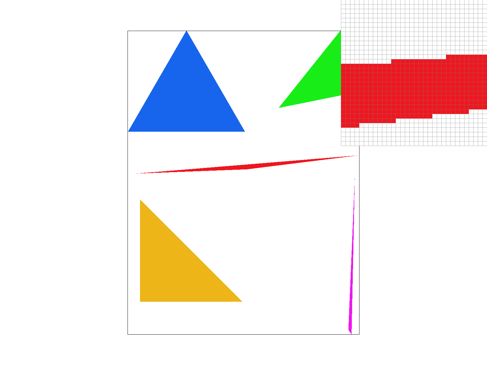
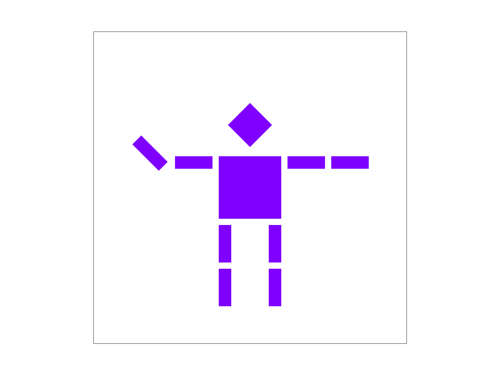
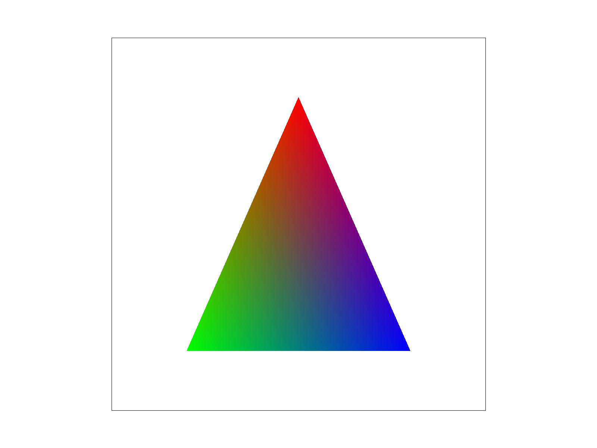
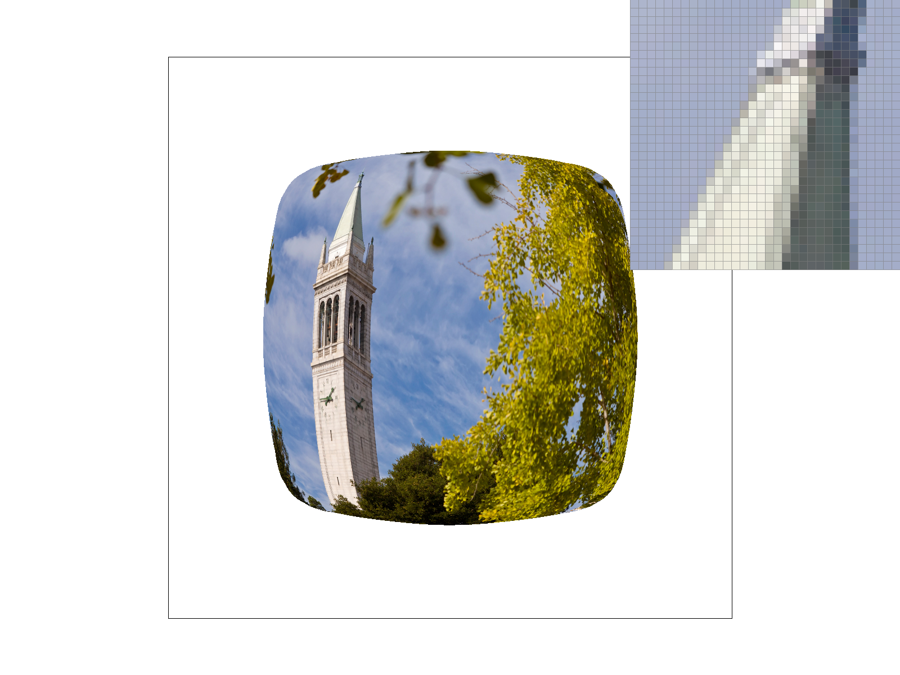

In this homework, I implemented a 2D rasterizer from the ground up. I started with the basics, rasterizing triangles using a bounding box and edge function test. Then, I gradually moved on to more complex design tasks, which included experimenting with supersampling to reduce aliasing, transformation matrices to position objects in the scene, barycentric coordinates to interpolate colors across triangles, and texture mapping using both pixel and level sampling.
Out of everything I covered, supersampling was the concept that stuck with me the most. It's elegant in its simplicity, sample more, average the results, get a cleaner image. Each technique tackles aliasing from a different angle: supersampling handles it at the geometry level, pixel sampling at the texel level, and level sampling at the resolution level. Supersampling felt like the foundation everything else was built on.
Task 1: Rasterizing Single-Color Triangles
To rasterize a triangle, I iterate over every pixel within the triangle's bounding box, defined by the min and max x and y coordinates of the three vertices. For each pixel, I sample at the center point (x + 0.5, y + 0.5) and run a point-in-triangle test using the edge function method from class. If the sample point is inside (or on the boundary of) the triangle, I call fill_pixel() to color it.
To handle both clockwise and counter-clockwise winding orders, I check if the sample passes all three edge tests with the same sign. If it fails in the positive direction, I check the negative direction, ensuring the triangle is drawn regardless of vertex ordering.
My algorithm is no worse than checking every sample within the bounding box because that's exactly what it does. It only loops over pixels within the min/max x and y range of the vertices, never touching pixels outside that rectangle. No pixel in the framebuffer is checked unnecessarily.
The pixel inspector here is centered on the tip of the red triangle in test4.svg, where the aliasing effect is most visible along two of its edges.
Screenshot of basic/test4.svg with pixel inspector on the tip of the red triangle
Task 2: Antialiasing by Supersampling
For this task, I implemented grid-based supersampling using a flat array, specifically a std::vector called sample_buffer sized at width x height x sample_rate. This stores all subsamples as floating point colors before anything gets written to the framebuffer. Within each pixel, subsamples are laid out in a spp_side x spp_side grid where spp_side = sqrt(sample_rate), with each subsample positioned at (x + (i + 0.5) / spp_side, y + (j + 0.5) / spp_side).
Supersampling is useful because it directly addresses the aliasing problem from Task 1. Sampling only once per pixel gives a hard on/off result depending on whether the center falls inside the triangle. Taking multiple samples and averaging them means partial triangle coverage contributes proportionally to the final pixel color, producing smoother edges. Pixels near triangle boundaries get blended colors rather than abrupt transitions, which is what creates the antialiasing effect.
To support this, I updated several parts of the pipeline. set_sample_rate and set_framebuffer_target now resize the sample buffer to width x height x sample_rate whenever the sample rate or window dimensions change. I updated fill_pixel to write the same color to all subsamples for a given pixel, so points and lines still render correctly without being supersampled. rasterize_triangle now writes directly into the sample buffer rather than the framebuffer. Finally, resolve_to_framebuffer averages all subsamples per pixel down to a single color, clamps the result to [0, 1], and converts to 8-bit unsigned integers for display.

Sample Rate 1Sample Rate 4Sample Rate 16
Task 3: Transforms
The three 2D transforms are represented as 3x3 homogeneous-coordinate matrices. A translation starts with the identity matrix and inserts the x and y offsets into the last column. A scaling transform places the two scale factors on the diagonal while leaving the remaining entries identical to the identity matrix. For rotation, the angle is converted from degrees to radians, then its sine and cosine are computed and positioned in the standard counterclockwise 2D rotation matrix: −sin in the upper-right of the 2x2 submatrix and +sin in the lower-left.
For the robot, I wanted to make Cubeman look like he's waving, with his left arm raised up toward his head while his right arm rests down by his side. I achieved this by updating the left arm group's transform (changing it to ) so the arm rotates around its attachment point into a lifted position. Finally, I changed every polygon's fill from #EF161F to #8000FF to give Cubeman a bold purple look.

My updated Cubeman with a waving pose and #8000FF color.
Task 4: Barycentric Coordinates
Barycentric coordinates represent any point inside a triangle as a weighted combination of its three vertices, using weights (α,β,γ) that are all non-negative and add up to 1. The figure illustrates this clearly: the top vertex is entirely red (α=1,β=0,γ=0), the bottom-left vertex is entirely green, and the bottom-right vertex is entirely blue. A point midway between the red and green corners has α=0.5,β=0.5,γ=0, which blends to yellow. At the triangle's center, α = β = γ = 1/3, so each vertex contributes equally, producing the brown color in the middle. To demonstrate barycentric coordinates, I made a custom SVG containing a single triangle with its three vertices colored red, green, and blue. I also rendered test7.svg using the default viewing settings at sample rate 1, which displays a color wheel built entirely from triangles whose colors are interpolated using barycentric weights.

Task 5: Pixel Sampling for Texture Mapping
Pixel sampling is how the renderer decides the final color of each screen pixel when a texture is involved. Because UV coordinates vary continuously across a surface while the texture is stored as a discrete grid of texels, a floating-point (u,v) location has to be converted into an actual texel color.
In rasterize_textured_triangle, I first compute barycentric coordinates for each sample position and use them to smoothly interpolate the triangle's UVs. That interpolated UV is then evaluated using either sample_nearest or sample_bilinear, depending on the current psm mode.
With nearest-neighbor sampling, the UV is mapped to the single closest texel (via rounding), and that texel's color is returned directly. This is efficient, but when the texture is zoomed in it often produces a chunky, pixelated look because there's no blending between neighboring texels.
Bilinear sampling, on the other hand, looks up the four texels surrounding the UV coordinate and blends them using linear interpolation in both directions. The extra work results in a noticeably smoother appearance, especially when textures are magnified or viewed at angles.
The contrast between the two methods stands out most when magnification causes one texel to cover many pixels, when there are sharp transitions in the texture that nearest turns into visible blocks, and along diagonal features where nearest creates staircase-like jaggies. Bilinear reduces these artifacts by averaging across the nearest four texels instead of choosing just one.
Across the four screenshots, the main differences come from switching between nearest vs. bilinear pixel sampling and increasing the sample rate from 1 to 16. With nearest sampling (left column), the zoomed inset shows more obvious blocky, stair-stepped texel boundaries, especially along diagonal edges. Bilinear sampling (right column) blends between neighboring texels, so the inset looks smoother and less pixelated, though slightly softer. Increasing the sample rate to 16 (bottom row) mainly reduces jaggies along the silhouette and edges of the textured shape, while the pixel sampling method still determines whether the texture detail appears crisp-and-blocky (nearest) or smoother-and-blended (bilinear).
Pixel sampling is the step where I decide what color each screen sample should take by reading from a texture image. Texture coordinates vary continuously across a triangle, but the texture is stored as a discrete grid of texels, so I need a way to map a floating point UV coordinate to an actual color.
In my rasterize_textured_triangle function, I rasterize the textured triangle using the same supersampling structure as my other triangle routines. I first compute the triangle's bounding box, then iterate over every pixel in that box. For each pixel, I iterate over a square grid of sub-samples based on the sample rate, placing each sub-sample at an offset inside the pixel. For each sub-sample position, I compute barycentric weights using the triangle's area, and I use those weights to interpolate the triangle's UV coordinates at that sample point. If all weights are non-negative, the sample lies inside the triangle, so I proceed to sample the texture.
The texture lookup depends on the current pixel sampling mode. If the mode is nearest, I sample the single closest texel to the interpolated UV coordinate by calling sample_nearest and use that texel's color directly. If the mode is bilinear, I call sample_bilinear, which blends the four surrounding texels to produce a smoother result. In both cases, I always sample from mip level 0, meaning I always read from the full resolution texture rather than selecting a lower resolution mipmap level. After computing the texture color, I store it into the correct location in the sample buffer for that sub-sample. Once all geometry is rasterized, resolve_to_framebuffer averages the sub-samples for each pixel and writes the final color into the framebuffer.
I used a campanile texture image since I was unable to load other PNG files, and I zoomed in on a corner edge of the campanile. I focused on that corner because it contains a sharp boundary and fine detail, which makes sampling artifacts easier to see and highlights the visual differences between nearest and bilinear filtering, especially in regions where the texture is compressed into a small area on the screen.
L_NEAREST + P_LINEAR
L_NEAREST + P_NEAREST

L_ZERO + P_LINEAR
L_ZERO + P_NEAREST
L_NEAREST + P_LINEAR gave the smoothest-looking Campanile corner. In the zoomed inset, the tower edge transitions gradually, with intermediate gray pixels blending the boundary instead of stepping abruptly. This happens because bilinear pixel sampling averages nearby texels, and choosing the nearest mip level reduces the amount of high-frequency detail that would otherwise alias in the compressed region.
L_NEAREST + P_NEAREST looked sharper but more blocky. The edge of the tower breaks into more visible square steps in the inset because each sample snaps to a single texel. Using the nearest mip level still helps reduce shimmer compared to sampling level 0, but the lack of interpolation makes the stair-stepping much more obvious.
L_ZERO + P_LINEAR kept the general smoothness of bilinear sampling, but it showed more fine-grained aliasing along the Campanile edge. Since L_ZERO always samples from the full-resolution texture even when the texture is heavily minified, high-frequency detail leaks through, and the inset shows a noisier, more unstable-looking boundary despite the blending.
L_ZERO + P_NEAREST produced the harshest result. The corner edge has the most pronounced pixel steps and abrupt changes between neighboring pixels because it samples only one texel per lookup and always uses the highest-resolution mip level. With no mip level reduction and no interpolation, this combination preserves the most aliasing and makes the jaggies easiest to see in the zoomed corner.